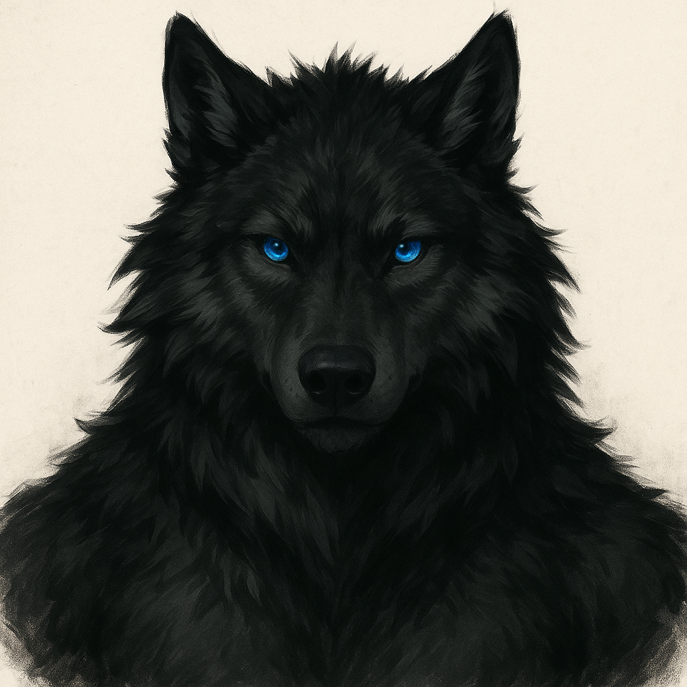
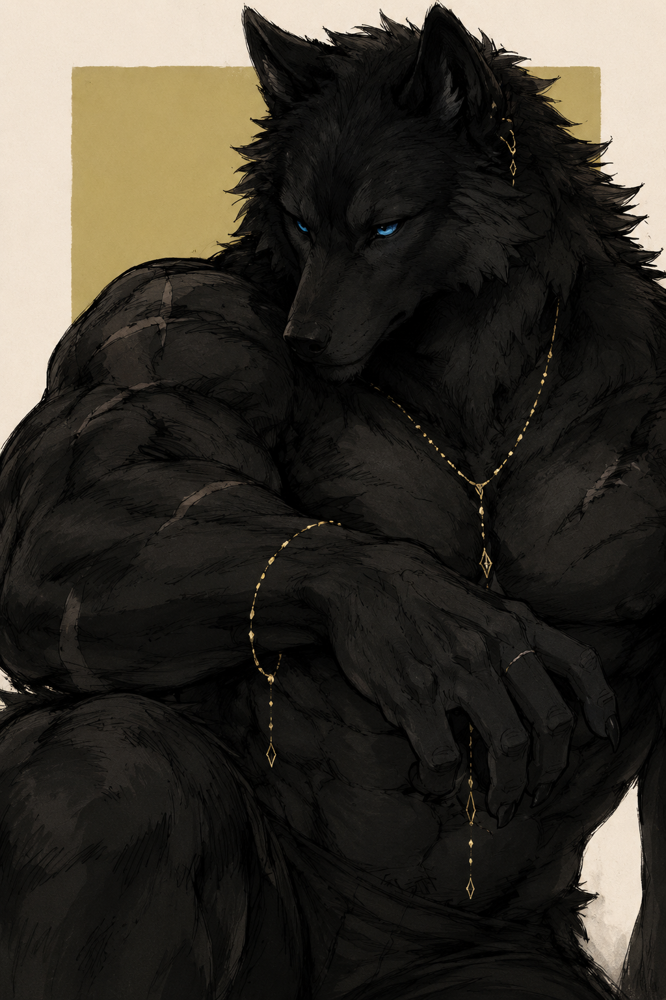

Игры
Проходим, залипаем, обсуждаем, иногда весело проигрываем и всё равно идём дальше.
Игры, киновечера и спокойные посиделки на стримах. Здесь можно просто расслабиться, поговорить обо всём или тихо посидеть рядом со стаей после долгого дня.
Проходим, обсуждаем, иногда героически страдаем с боссами.


Я — GreLka, добрый и дружелюбный вольк. Люблю игры, уютные посиделки и тёплое общение на стримах. Иногда могу залипнуть во что-нибудь интересное, иногда — просто болтать обо всяком.
Мне нравится атмосфера антропоморфных персонажей и всё, что с этим связано. На стримах я стараюсь, чтобы всем было комфортно и спокойно. Буду рад видеть тебя у себя — за фоллов отдельное спасибо 💙
Не обязательно быть громким. Можно писать в чат, можно смотреть молча — главное, чтобы было спокойно.
Проходим, залипаем, обсуждаем, иногда весело проигрываем и всё равно идём дальше.
Смотрим вместе, делимся эмоциями и отдыхаем в спокойной атмосфере.
Болтаем обо всём: игры, персонажи, фандом, идеи, мемы и просто жизнь.
Немного живости: команды чата, волчий сигнал и тёплая фраза вечера.
Нажми на команду — она скопируется, а сайт мягко подмигнёт.
Тихий зритель — тоже часть стаи.
Для моментов, когда хочется просто сказать: “я здесь”.
Буду рад видеть тебя на Twitch. Приходи на игры, киновечера или просто уютно посидеть в чате.